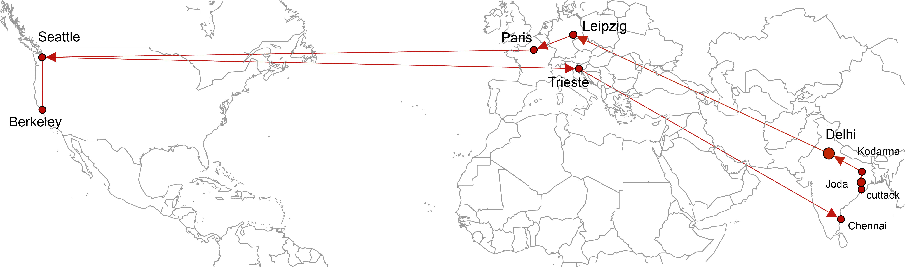

At present, I am Professor G in the Computational Biology group at The Institute of Mathematical Sciences (IMSc), Chennai, India. IMSc is a constituent institution of the Homi Bhabha National Institute (HBNI), Mumbai, India.
My Trajectory
I was born in Cuttack, Odisha, India and spent my first 7 years in a small industrial township Joda in Odisha. With my parents, I then moved to Kodarma in Jharkhand (formerly Bihar) for 2 years. In 1989, I moved to Delhi with my parents and settled there for next 20 years. In Delhi, I completed my Schooling, Bachelors, Masters and PhD. In May 2008, I moved to Leipzig, Germany for my Postdoctoral work. In March 2010, I shifted my base to Orsay (suburb of Paris). Between, March 2010 and February 2012, I kept shuttling between Paris and Leipzig. In February 2012, I moved to Seattle, USA. In March 2013, I moved to Trieste, Italy to continue my research. I returned to India in 2014.
News
How the brain's wiring changes
By Sahana Ghosh in Nature India
A mathematical tool offers a closer look at brain architecture for improved therapies
MEDIA COVERAGEJanuary 22, 2026
Mathematics Reveals Brain Changes
By Jana Gregor in Max Planck Socity News
Introduces a novel mathematical approach that enables identification of specific brain regions whose connectivity shifts with age or differs in autism spectrum disorder (ASD).
MEDIA COVERAGEJanuary 6, 2026
Microplastics laden with toxins and pathogens fill India’s marketplace air
By Sahana Ghosh in Nature India
Researchers warn of a “Trojan horse” effect as plastic particles small enough to inhale carry carcinogens and microbes into the lungs.
MEDIA COVERAGENovember 12, 2025
HBNI Outstanding Doctoral Student Award 2025 in Life Sciences to Ajaya Kumar Sahoo
Ajaya Kumar Sahoo received the HBNI Outstanding Doctoral Student Award 2025 in Life Sciences across HBNI CIs, for his PhD research.
AWARDJune 2, 2025
Shining light on the potential biomarkers of UV exposure
By Bharti Dharapuram in IMSc Newsletter March, 2025
MEDIA COVERAGEMay 30, 2025
Oil spills and industrial waste in rivers and coasts put marine life and human health at risk
By U Tejonmayam in The Times of India
MEDIA COVERAGEMay, 2025
Computational tools reveal ecological effects of pervasive pollutants
By Bharti Dharapuram in IMSc Newsletter March, 2025
MEDIA COVERAGEMarch, 2025
Flash Talk Award to Priyotosh Sil at 47th Indian Biophysical Society Meeting
Priyotosh Sil received a Flash Talk award of ₹5,000 at IBS 2025 hosted by IIT Madras, Chennai.
AWARDMarch 9, 2025
Best Poster Award to Shreyes Rajan Madgaonkar at MPRISM 2025
IISER Kolkata, India
Shreyes Rajan Madgaonkar was awarded Best Poster Prize at the International Conference on Microplastic Research Innovation & Sustainable Management (MPRISM), IISER Kolkata.
AWARDFebruary 16, 2025
Using maths to identify health risks from plastics
By Subha Priyadarshini in Nature India
Mathematical approaches to identify health risks from plastic materials and compounds.
MEDIA COVERAGEJanuary, 2025
Travel Award to Priyotosh Sil at European Conference on Mathematical and Theoretical Biology
Toledo, Spain
Priyotosh Sil received a €350 travel award to attend the European Conference on Mathematical and Theoretical Biology, Toledo, Spain.
AWARDJuly 26, 2024
Raman-Charpak Fellowship to Priyotosh Sil at IFCPAR/CEFIPRA
Université Paris-Saclay, France
Priyotosh Sil was awarded by IFCPAR/CEFIPRA to visit Université Paris-Saclay, France, for 3 months.
AWARDMay, 2024
Best Poster Award to Shanmuga Priya B at ICB-HFS 2024
Pondicherry University, India
Shanmuga Priya B was awarded Best Poster Prize at the International Conference on Bioinformatics in Health and Food Security (ICB-HFS), Pondicherry University.
AWARDFebruary 16, 2024
Best Poster Award to Nikhil Chivukula at AIBC 2024
Faridabad, India
Nikhil Chivukula was awarded Best Poster Prize at the 17th Annual International Biocuration Conference (AIBC), Faridabad, India.
AWARDMarch 8, 2024
HBNI Outstanding Doctoral Student Award 2023 in Life Sciences to Janani R
Janani R received the HBNI Outstanding Doctoral Student Award 2023 in Life Sciences across all HBNI CIs, for her PhD research.
AWARDJune 3, 2023
Best Poster Award to Yasharth Yadav at CNSD-2022
IISER Pune, India
Yasharth Yadav won Best Poster Prize at the Conference on Nonlinear Systems and Dynamics (CNSD), IISER Pune, with €200 prize and open-access publication invitation from EuroPhysics Letters.
AWARDDecember 18, 2022
Medicinal fungi may be suitable for identifying novel drugs
By Shubashree Desikan in The Hindu October 2, 2022
MEDIA COVERAGEOctober 2, 2022
Best Poster Award to Ajaya Kumar Sahoo at HBNI Theme Meeting on Life Sciences
Ajaya Kumar Sahoo was awarded the Best Poster Prize at the HBNI Theme Meeting on Life Sciences, held at RRCAT, Indore.
AWARDSeptember 10, 2022
A new study underlines biology's preference for minimal complexity
IIT Madras Shaastra Magazine
By MANUPRIYA in IIT Madras Shaastra Magazine May, 2022
MEDIA COVERAGEMay, 2022
ANSES relies on DEDuCT to establish a list of endocrine disruptors
ANSES, France
French Agency for Food, Environmental and Occupational Health & Safety (ANSES), as part of the second national strategy on endocrine disruptors (SNPE2) of France, has relied on our methodology and resource DEDuCT to establish a list of substances of interest.
By ANSES in Accelerating the assessment of endocrine disruptors April 15, 2021
POLICYApril 15, 2021
Indian team expands database of potenial endocrine disrupting chemicals
By Emma Davies ChemicalWatch
Indian researchers have updated and expanded a database of scientific studies on endocrine disrupting chemicals (EDCs), which was developed primarily as a tool to aid regulatory risk assessment. By Emma Davies in ChemicalWatch December 8, 2020
MEDIA COVERAGEDecember 8, 2020
Poster Prize to B.S. Karthikeyan at India International Science Festival (IISF) 2019
India International Science Festival, Kolkata
B.S. Karthikeyan, Research Associate in the group, presented a poster on our work on endocrine disruptors at the Young Scientists Conference (YSC), IISF 2019 held in Kolkata. His poster won the second prize in the theme Swasth Bharat. November 7, 2019
AWARDNovember 7, 2019
Best Poster Prize to B.S. Karthikeyan at Society of Biological Chemists (SBCI) 2019
Society of Biological Chemists (India), BARC Mumbai
B.S. Karthikeyan, Research Associate in the group, presented a poster on our work on endocrine disruptors at SBCI 2019 organised by Bhabha Atomic Research Centre (BARC), Mumbai. His poster was adjudged to be the best poster at the meeting.
AWARDNovember 3, 2019
Database of endocrine disruptors focuses on experimental evidence
By K.V. Venkatasubramanian in C&EN
Analysis of substances suggests no correlation between chemical structure and biological effects.
MEDIA COVERAGEAugust 14, 2019
Indian team identifies hundreds of potential EDCs
By Emma Davies in ChemicalWatch
Researchers identified 686 potential endocrine disrupting chemicals from literature analysis.
MEDIA COVERAGEJuly 25, 2019
Indian scientists develop database of everyday harmful to human health
By Dinesh C Sharma in Indian Science Wire
In our daily lives, we get exposed to dozens of chemicals either through products we use or consume as well as through exposure to the environment. Such chemicals are present in consumer products, pesticides and insecticides, cosmetics, drugs.
MEDIA COVERAGEJuly 19, 2019
Now, a database of harmful chemicals in everyday items
By Snehal Fernandes in Hindustan Times
Ingredients in your everyday items may have an adverse effect on your body. Chennai-based Institute of Mathematical Sciences (IMSc) has created an online database — Database of Endocrine Disrupting Chemicals.
MEDIA COVERAGEJuly 18, 2019